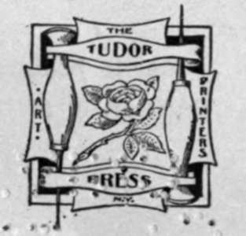
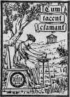

The National Capitol | by George C. Hazelton, Jr
In presenting this book to the public, it is deemed just to say that the idea of writing a history of the Capitol was first urged upon the author by Captain Howard F. Kennedy, and that, in the preparation of the work, he has collaborated by furnishing facts and data collected by him during his long association with the building, and embraced in his lecture, familiar to tourists and many others. This production is submitted to the public with the hope that it may merit a generous welcome at their hands. If it fails to enlarge the scope of information already accumulated by other writers, or to awaken in the minds and hearts of the people greater interest and pride in their Capitol—the great forum of the law-making power of the government—such a result cannot be attributed to a want of careful research or long-continued faithful labor.
| Title | The National Capitol. Its Architecture Art And History |
| Author | George C. Hazelton, Jr |
| Publisher | J. F. Taylor & Company |
| Year | 1906 |
| Copyright | 1902, J. F. Taylor & Company |
| Amazon | The National Capitol Its Architecture Art and History |
By George C. Hazelton, Jr, Ft J., Author Of "Mistress Well," Etc.
"Ah, to build, to build! That is the noblest art of all the arts".
Longfellow's "Michael Angelo.
 Preface
Preface- To the student and lover of architecture, it is hoped that these pages may light the way the builders took from the first foundation stone to the last and crowning piece upon the dome; to the lover of...
- City Of Washington
- In fancy now, beneath the twilight gloom, Come, let me lead thee o'er this second Rome ! Where tribunes rule, where dusky Davi bow, And what was Goose-Creek once is Tiber now:— This embrio capital,...
- City Of Washington. Part 2
- Jefferson in his ana records a bit of inside history regarding the final settlement of the controversy by Congress in favor of the Potomac, and only the growth of the city and its grandeur to-day comp...
- City Of Washington. Part 3
- After coming upon the hill from the Eastern Branch ferry the country is level and on a space of above two miles each way present a most eligible position for the first settlement of a great city and...
- City Of Washington. Part 4
- History to-day gives to L'Enfant full credit for the genius of arrangement displayed in his original plan of the Federal City. Unfortunately, however, the qualities of his temperament made it impossib...
- City Of Washington. Part 5
- President Washington, in a letter to the Commissioners, dated February 20, 1797, throws some light on the history of these early maps. That many alterations have been made from L'Enfant's plan by Ma...
- Early Plans And Architects
- The site for the legislative halls having been selected to the satisfaction of the President, the question of plans suitable to a building for the occupation of Congress took up the attention of the p...
- Washington In The Territory Of Columbia
- A premium of a lot in this city to be designated by impartial judges, and five hundred dollars, or a medal of that value at the option of the party, will be given by the Commissioners of the Federal...
- Washington In The Territory Of Columbia. Continued
- After these opinions, there could remain no hesitation how to decide; and Mr. Hoban was accordingly informed that the foundation would be begun upon the plan exhibited by Mr. Hallet, leaving the rece...
- Original Corner-Stone
- The 18th of September, 1793, should be ever memorable in American history. On that eventful day, George Washington, surrounded by those he loved, descended into the cavazion at the southeast corner of...
- Old Capitol
- In the month of October, 1800, a small packet sloop, laden with all the records, archives and furniture which the infant Republic possessed, sailed from Philadelphia, where Congress then sat, up th...
- Old Capitol. Part 2
- The corresponding south wing* was not so far completed as to be occupied by the House of Representatives until the beginning of the extra session on October 26, 1807. At the close of the first session...
- Old Capitol. Part 3
- In 1807 Latrobe sent a letter to Congress, and the following extracts are worthy of perusal, not only for their description of the south wing, but for their pfcture of some of the difficulties under w...
- Burning Of The Capitol, 1814
- Congress continued to occupy the two small wings until the ill-fated 24th day of August, 1814. Our second war with Great Britain was then at its height. Madison was President. A few days before, an En...
- Burning Of The Capitol, 1814. Continued
- Fortunately, the storm which had been threatening during the approach of the English, aided by a few patriotic hands, finally extinguished the flames. But too late ! It is recorded as having had a vel...
- Re-Assembling Of Congress
- The triumphal entry of the British into the capital, the destruction of the government buildings by fire, and the retreat the following day, created intense excitement in the land. Because of the extr...
- The Rebuilding Of The Capitol
- Soon after the bill for the removal of the seat of government was defeated and all chances in that direction made hopeless, at least for the present, measures were taken for the restoration of the pub...
- The South Wing Of The Capitol
- The south wing of the Capitol remains internally in the state in which it was left at the close of the year 1815, excepting in as far as the suggestions of the committee of the House of Representative...
- North Wing Of The Capitol
- The north wing of the Capitol was left after the fire in a much more ruinous state than the south wing. The whole of the interior of the west side having been constructed of timber, and the old shingl...
- North Wing Of The Capitol. Continued
- The centre of the north wing demanded light from above ; and its symmetry with the south wing, which could only be lighted by a cupola, demanded a similar construction on the north wing. Theref...
- The Central Structure
- Previous to the fire a wooden bridge or covered way only had connected the two wings. As soon as these were restored, and completed in accordance with Latrobe's designs, Bulfinch turned his attention ...
- Marble Extensions
- Not many years elapsed before it became evident that the Capitol was not sufficiently commodious to meet the purposes for which it had been built, and that even the masterly forethought of George Wash...
- Laying Of The- Corner-Stone
- The following account of the laying of the corner-stone of the extensions, July 4, 1851, is taken from the National Intelligencer of the 7th : The National anniversary was, in its important inciden...
- Construction Of The Capitol
- Great difficulty was experienced in the building of the foundations, especially at the northwest corner of the Senate wing, where the soil was very sandy. At that point, the walls were sunk forty feet...
- Occupancy By Congress
- The House met for the first time in the new Hall of Representatives in the south extension at twelve o'clock, December 16, 1857. The new Senate Chamber was not ready for occupancy for more than a year...
- The Dome
- The marble extensions had not far progressed before it was strikingly apparent that they would dwarf and render out of proportion the central dome of the old Capitol. Then, too, the old dome had nearl...
- Dome-Entrance And View
- The narrow, tortuous stairway which leads to the dome rises from the circular vestibule before the entrance to the office of the Marshal of the Supreme Court. There are 365 steps in the ascension, one...
- The Goddess Of Freedom
- The huge -bronze—variously called The Goddess of Freedom, The Goddess of Liberty and The Indian Goddess—which to-day rests upon the great dome-pedestal, for some years awaited its destination i...
- The Terrace
- Even after the erection of the grand marble wings and the elevation of the dome, the Capitol, except on the eastern front, had an unfinished appearance despite the sodded embankment which formed the o...
- Marshall's Statue
- At the foot of the terrace, between the two main western stairways, is a bronze statue on whose base is inscribed: John Marshall, Chief Justice of the United States. Erected by the Bar and the Congr...
- Greenough's Statue Of Washington (Similar To Statue Of Zeus)
- On the eastern plaza, about five hundred feet from the Capitol, resting upon a low granite pedestal, is a colossal statue in marble of Washington, which has enjoyed a remarkable history. The figure, s...
- Greenough's Statue Of Washington (Similar To Statue Of Zeus). Continued
- The effect of the statue generally was disappointing. It awakened the ridicule especially of the Congressional wits and connoisseurs; and the Senate in 1842 added an amendment, which was finally adopt...
- Notable Events At The The Campus
- Wednesday evenings in the summer months, when the weather permits, the Marine Band plays on the eastern plaza for the education and enjoyment of the general public. This open campus has been the scene...
- Inaugurations
- From the central portico, once in four years, a large platform is customarily erected, which holds in the neighborhood of 2,500 persons. At the front of this wooden platform is placed a small raised p...
- Centennial And Christian Endeavor Celebrations
- The exercises attending the hundredth anniversary of the laying of the original corner-stone of the Capitol by George Washington, September 18, 1793, were held on the east front of the Capitol. Congre...
- Eastern Approach
- The parking in the midst of which the Capitol stands now consists of 58^ acres. In the old days, there was a fish pond in the center to the east, adorned with the naval monument, which was later remov...
- The Decorated Pediments
- The decoration of the pediment above the central steps on the eastern facade bespeaks attention. The semi-colossal figure in the center represents the 11 Genius of America. This work is carved in ali...
- Groups And Statues On The Central Portico
- The two marble groups upon the blockings over the porte-cochere of the central building attract considerable attention because of their prominence. The one to the north is by Greenough, and is popular...
- Rogers' Bronze Doors
- The beautiful bronze doors at the eastern entrance to the rotunda are popularly called The Columbus Doors because they represent scenes in the life of that great admiral. They were designed and mod...
- The Rotunda
- The walls of the rotunda, or interior of the dome, are divided into twelve panels by lofty classic pilasters or Grecian antae. Isthmian wreaths ornament the entablature thus supported. The upper secti...
- Brumidi
- The story of the Capitol cannot be written without the name Constantino Brumidi. f About his life romance clings. Even in childhood the gods favored his hand with fine artistic cunning. His father was...
- Fresco
- The art of fresco, which has long flourished in Italy, was known and practiced by the Egyptians, Greeks and Romans. The Germans, French and northern nations had no knowledge of the art. The French, in...
- The Canopy, Apotheosis Of Washington
- The canopy which forms the ceiling of the rotunda was finished by Brumidi in 1865. This conception of the artist, because of its great height from the observer, was drawn in heroic proportions. It rep...
- The Frieze
- About 75 feet from the floor, the walls of the rotunda are belted by a frieze, which, at the first glance, gives the impression of alto-rilievo. It is, however, a fresco, the work of two foreign-born ...
- Tin Trumbull Paintings
- The four historical paintings which adom tne larger panels on the western walls of the rotunda are the work of John Trumbull, a son of Jonathan Trumbull, Revolutionary Governor of Connecticut. They re...
- Tin Trumbull Paintings. Continued
- The Signing of the Declaration of Independence is the most generally admired, as it is the most natural in tone and finish; after it, the Resignation of Washington. Perhaps the superiority of these in...
- Declaration Of Independence
- Franklin, Jefferson, Adams, Livingston and Sherman, the committee appointed to draft the Declaration of Independence, reported it to the Continental Congress as Jefferson had written it. It was a...
- Surrender Of General Burgoyne
- Following the brilliant charge of Arnold on October 7, 1777, Burgoyne fell back upon Saratoga. Here the British were surrounded upon all sides; and on the 17th, the entire army of nearly 6,000 men, th...
- Surrender Of Lord Cornwallis
- The surrender of Lord Cornwallis on October 19, 1781, was the virtual end of the Revolution. His troops, numbering about 7,073, became u prisoners of war to Congress, and the naval force to France. T...
- General Washington Resigning His Commission
- Washington resigned his commission as Commander-in-chief to Congress, then sitting at Annapolis, Maryland, at noon on December 23, 1783, a public entertainment having been given in his honor the day b...
- Weir, Vanderlyn, Powell And Chapman Paintings
- By a joint resolution of June 23, 1836, a committee was appointed to contract with one or more competent American artists for the execution of four historical pictures upon subjects serving to illus...
- The Embarkation Of The Pilgrims
- The Embarkation of the Pilgrims by Robert Weir affects us with something of the same incongruity which we feel upon reading the words of one of the Pilgrims at starting: We sang psalms and were merr...
- The Landing Of Columbus
- The Landing of Columbus is the work of John Vanderlyn. It is unnatural, feeble in execution and lacking in general impressiveness. It purports to represent the landing of the Spaniards on San Salvador...
- The Discovery Of The Mississippi
- The Discovery of the Mississippi was painted by William H. Powell. Some of the drawings for it were made in Paris, and it shows unmistakably the influence of French art. It has, perhaps, as little cla...
- The Baptism Of Pocahontas
- The Baptism of Pocahontas was painted by John G. Chapman. Matoaka, signifying a streamlet between two hills, or the Snow Feather, as her Indian friends delighted to call her, was christened Rebecca....
- Rilievos
- The arabesques above the paintings are adorned with sculptured portraits, by Capellano and Causici, of Columbus, Raleigh, Cabot and La Salle. These with their wreath-work adornment, executed iai827, c...
- The President's Secretary
- In April, 1828, John Adams, the secretary and messenger of John Quincy Adams, was charged with the delivery of a Message to each House of Congress. Whilst passing from the Hall of Representatives, aft...
- Remains In State. Lincoln
- Booth shot Lincoln a few minutes after ten o'clock on the evening of Good Friday, April 14, 1865. The President passed away the next day in a private house opposite Ford's Theater, where the tragedy o...
- Stevens
- The mortal remains of Thaddeus Stevens were placed in state beneath the canopy on the 13th of August, 1868. The bier which supported the casket was the same used for Lincoln, newly covered, however, w...
- Garfield
- Late in the afternoon of September 21, 1881, the plateau to the east of the Capitol was massed with military organizations. The officers of the army and navy were drawn up in two lines leading to the ...
- Logan
- On Thursday, December 30, 1886, the mortal remains of John A. Logan, the brave, were conveyed to the Capitol from his fine old home, Calumet Place, where he had at last surrendered. The casket, wrappe...
- Midnight In The Rotunda
- At midnight in the rotunda, the step of the traverser grows stealthy, and he speaks in whispers. The historic walls, which so oft have looked upon the dead, answer step and voice in hollow accents unt...
- The Congressional Library
- The rooms which, until July 31, 1897, were occupied by the Congressional Library are upon the main floor, on the west front of the central building. The four columns to the right and left of the entra...
- The Congressional Library. Continued
- Writing in 1842 of the Library room in the central building, Librarian Watterston says it consists of twelve alcoves, supporting two galleries running along the whole length of the apartment from no...
- Supreme Court Chamber
- To the north of the rotunda is a light-well, evidently modeled after some Grecian temple. Its curious tobacco capitals were designed by Latrobe from the flowers and leaves of the native plant. To t...
- Court Room
- Beyond this, and on the east side of the main corridor running to the north or Senate wing, is the door to the Supreme Court chamber, which, except for a short period, was occupied by the Senate from ...
- The Court
- The Supreme Court of the United States is the only court established directly by the Constitution. The justices, as we commonly say, are appointed for life or, in the more exact words of that great in...
- Marble Busts
- On the brackets about the semi-circular walls are arranged busts of the former Chief Justices. To the left, upon entering the chamber, are those of John Jay, the first Chief Justice, by John Frazee; O...
- Important Cases
- Perhaps of the cases coming before the Supreme Court since it first sat within these walls those which have attracted the most popular interest are the series known as the Income Tax Cases, argued in ...
- Notable Events At The Court Room
- This Court room is one of the most historic rooms in the Capitol. Here, before its restoration, Thomas Jefferson, the first President to be inaugurated at the Capitol, delivered his address and took t...
- Impeachments Of Pickering And Chase
- The new Republic was not many years of age before the House exercised the right of impeachment for high crimes and misdemeanors, given it by the Constitution. In 1803 it preferred articles against Joh...
- Quarrel Between Benton And Foote
- A scene occurred in this old Senate Chamber on April 17, 1850, which created much excitement at the time. Senators Benton and Foote had already had several sharp personal altercations in debate. On th...
- Farewells Of Calhoun, Clay, Webster
- Within these walls, the curtain fell for the last time on the parliamentary careers of the three most notable actors yet on the stage of American statesmanship—Calhoun, Clay, Webster. A frequent visit...
- Funerals Of Calhoun And Clay
- Webster died at Marshfield, Massachusetts ; Calhoun and Clay passed away in Washington and were honored with funeral exercises at the Capitol. On Tuesday, April 2, 1850, at twelve o'clock, the remains...
- Assault Vipon Sumner
- The assault upon Mr. Sumner, while here seated at his Senatorial desk, May 22, 1856, was of a more serious nature and more to be regretted, than the quarrel—however serious its aspect—between Mr. Bent...
- Robing Room Of The Justices And Offices Of The Clerk
- The Clerk's offices are on the west side of the main corridor, and open from the vestibule, directly before the Court room, which contains Ionic columns similar to those within that chamber. The ro...
- The Senate Wing
- Before the principal entrance to the Senate Chamber runs east and west the main corridor of that wing. To the south of its eastern archway is a portrait of Washington by Gilbert Stuart, and to the nor...
- Statue Of Hancock
- At the foot of this beautiful staircase stands a marble statue of John Hancock, the first signer of the Declaration of Independence. On the base are inscribed these words : **. He wrote his name where...
- Battle Of Chapultepec
- On the wall above the landing of the staircase is an historical painting by James Walker, which represents the battle of Chapultepec. This battle was fought on the 13th of September, 1847, the America...
- Secretary's Room
- From the west corridor opens the suite of rooms which are set apart for the use of the Secretary of the Senate and his corps of assistants. Here are filed all the records of the Senate, all papers and...
- President's Room
- At the west end of the private lobby, which is directly north of the Senate Chamber proper, is a room known as the President's room. This is, beyond doubt, the most beautifully decorated room in the C...
- Reception Of King Kalakaua
- On Friday, December 18, 1874, Mr. Cameron announced to the Senate that King Kalakaua was in the President's room, and that the committee charged with his reception would suggest that the Senators call...
- The Marble Room
- The marble room is directly east of the President's room, and also opens upon the private lobby of the Senate. This room is built almost entirely of marble; the ceiling, pilasters and four fluted Cori...
- Vice-President's Room
- The private office of the Vice-President, which is known as the Vice-President's room, is directly east of the marble room. It is not ordinarily open to the public. Upon its eastern wall hangs a portr...
- Public Reception Room
- The public reception room before the eastern entrance to the Senate lobby owes much of its beauty to exquisite mural decorations in fresco by Brumidi, though the artist, because of other assignments o...
- Senate Bronze Doors
- At the entrance to this hallway from the eastern portico of the wing are bronze doors designed by Crawford, which are said to be the first work of the character cast in this country,—at Chicopee, Mass...
- Committee On The District Of Columbia
- The door to the north within the entrance leads to the abode of the Committee on the District of Columbia. To bespeak the beauty of this District room, it is necessary only to say that it was decorate...
- Statue Of Franklin
- The entrance hallway connects with a corridor, from which ascends a grand staircase built entirely of Tennessee marble. At its foot is a well-conceived though passive statue of Benjamin Franklin by Hi...
- Battle Of Lake Erie
- On the wall above the landing of the staircase is the celebrated picture by W. H. Powell, known as the Battle of Lake Erie, fought at Put-In Bay on the ioth of September, 1813, during our second war w...
- Recall Of Columbus
- On the wall above and opposite the Battle of Lake Erie hangs a painting which commands the admiration of artists. Its title is the Recall of Columbus. This picture is by a. o. Heaton of Washington, D....
- Moran Paintings, Etc
- On the north and south walls of the lobby east of the central eastern gallery of the Senate Chamber are two famous landscapes by Thomas Moran, known as the Grand Canon of the Yellowstone and the Chasm...
- Electoral Commission
- On the eastern wall of the lobby of the Senate gallery, above the reception room, is an interesting picture by Cornelia Adele Fassett, painted from life in 1877-78. It represents one of the most impor...
- The First Fight Of Ironclads
- On the opposite wall hangs a naval painting of the battle between the Monitor and the Merrimac, that man-el of history which took place in Hampton Roads, March 9, 1862. The artist, W. F. Halsall, who ...
- Portraits Of Lincoln, Garfield, Sumner And Dix
- To the right and left of the picture of the Electoral Commission hang two remarkable mosaics, of Abraham Lincoln and James A. Garfield. They were made by Salviati, of Florence, Italy, and by him prese...
- Senate Document Rooms
- Opening off the southern corridor of the gallery floor is a crowded, littered and irregular suite of rooms known as the Senate document rooms. These lie in the upper story of the annex as well as that...
- Senate Chamber
- An excellent view of the Senate Chamber is to be had from any one of its galleries, the seating capacity of which is 690 persons. The chamber is rectangular in shape, being 113 feet 3 inches in length...
- Decorations
- The glass ceiling of this chamber is adorned with symbolisms of War, Peace, Union and Progress, and of the arts, sciences and industries. The panels are buff-colored, and the walls themselves decorate...
- Notable Events At The Senate Chamber
- The Vice-President-elect takes the oath of office, customarily administered by the Vice-President, just preceding the inauguration of the President. This ceremony takes place in the Senate Chamber, ov...
- Baker's Speech
- In this Senate Chamber, Edward Dickinson Baker, the Senator-soldier from Oregon, delivered the brilliant speech which proved to be his last utterance upon the floor of Congress. With a zeal that nev...
- Impeachment Of Andrew Johnson
- Here occurred the most famous impeachment trial in the history of the American Republic. On February 21, 1868, Mr. Covode of Pennsylvania moved the following resolution in the House of Representatives...
- Impeachment Of Belknap
- On Tuesday, April 4, 1876, in the administration of President Grant, the managers of the impeachment on the part of the House of Representatives appeared at the bar of the Senate; and after the proper...
- Eulogies
- As in the House, days are set apart in the Senate for eulogies to be pronounced upon distinguished dead. In some cases the honor has been much more marked. The remains of Chief Justice Chase, on Ma...
- Charles Willson Peale's Washington
- At the head of the western staircase leading to the Senate galleries is a full-length painting of George Washington. On it we read: C. W. Peale, pinx! Philadelphia 1779. It was commenced in 1778, w...
- Ground Floor. Senate Wing
- East and west marble stairways lead from the main floor of the Senate wing to the ground floor. There are also two elevators, and two private stairways, whose railings are artistically wrought in bron...
- Decoration Of The Corridors
- The corridors are noticeable for their decorations in fresco, oils and lime. Much of the beauty of these is lost, however, to appreciative eyes because of the bad lighting. Most of them were painte...
- Committee Rooms. Senate Wing
- Near the northern exit to the terrace are frescoes of the great American jurists, Kent and Story. Above some of the committee room doors Brumidi has painted scenes suggestive of their occupants at the...
- Central Building And Consultation Room Of Justices
- The main corridor running the entire length of the building upon this floor, with an exit to the marble terrace at either end, is nearly 750 feet in length. Consultation Room Of Justices The fir...
- Senate Barber Shop
- Next to the consultation room, on the same side of the hallway, is the Senate barber shop. Its window faces to the west. A portion of the room is occupied by the private bath-tubs for Senators. The at...
- "Corncob" Columns
- Beyond, the main corridor widens into a circular space, beneath the light well, from which a door to the east opens into a sort of vestibule. From this rise a stairway and private elevator, both of wh...
- Law Library
- To the north of the exit door of the vestibule, formerly the principal entrance to the old Senate wing, lie the historic room and alcoves now filled with the Law Library. This Library was established ...
- The Crypt
- The large circular chamber in the center of the building on the ground floor is known as the crypt. In this somber space are forty Doric columns of brown stone, which contribute to the support of the ...
- Washington Tomb And Statue
- Beneath the star in the center of the crypt is a tomb known as the Washington Tomb. Above it, formerly, was a circular opening in the floor of the rotunda, evidently for the purpose of lighting the...
- Court Of Claims
- The Court of Claims, which was established February 24, 1855, was organized and first sat in Willard's Hotel. Later it moved to the Capitol and occupied the suite of rooms below the Library, the Court...
- Offices Of The Chief Clerk
- To the south of the so-called crypt, towards the wing of the House of Representatives, and opening from the main corridor, are the offices of the chief clerk of that body. The northeast room of this s...
- House Wing
- The House post-office and restaurant are upon this floor, east of the main corridor of the Capitol. The bath-rooms of the House also were formerly here, but have since been moved to the sub-basement n...
- Decoration
- The main corridor of the ground floor of the House is much enriched by colonnades of semi-Corinthian columns carved from fine Italian marble. The crowning section of each capital is designed from the ...
- Committee Rooms. House Wing
- The mural decorations of the room of the Committee on Agriculture, which is upon the west front, were the first work of Brumidi at the Capitol. They were done on probation, and were so satisfactory to...
- Bronze Stairways
- This floor has two main stairways and two elevators, as in the Senate wing, though one of these lifts rises at the south end of the western corridor, rather than at the west end of the northern. A...
- The House Wing. Speaker's Room And Lobby
- The Speaker's room is at the head of the eastern private staircase of the House. There is nothing about its decoration in any way to distinguish it. The room is for the exclusive use of the Speaker of...
- Committee Rooms And Offices
- The door at the west end of the Speaker's lobby leads to the hallway known as the west corridor of the House. At the south end of this corridor, until recently, were the offices of the Clerk and of th...
- Westward The Course Of Empire Takes Its Way
- From the west corridor, a grand marble staircase ascends to the galleries of the House. At its foot is a bronze bust by Vincenti of the Chippewa Chief, Beeshekee, the 'Buffalo. On the walls above the ...
- Portrait Of Marshall
- On the wall above the upper landing of this staircase is a full-length painting of John Marshall, the fourth Chief Justice of the Supreme Court of the United States, copied from the original by Willia...
- Chamber Of The House Of Representatives
- From any one of the galleries, the hall occupied by the Representatives appears, as it is, considerably larger than the Senate Chamber. It is 139 feet in length, 93 feet in width and 36 feet in height...
- Furniture Of The Chamber Of The House Of Representatives
- On February 13, 1807, in discussing in the House an appropriation of #20,000 for the furnishing of their new chamber, where is now Statuary Hall, Mr. Jackson made the objection that, if approved, th...
- Paintings Of The Chamber Of The House Of Representatives
- One day, a boy was working in a blacksmith's shop near Kingston, New York. Up rode a horseman whose horse had cast a shoe. His attention was caught by a rough charcoal sketch upon a neighboring barn d...
- Maiden Speech Of The Chamber Of The House Of Representatives
- The 16th of December, 1857, writes S. S. Cox, in his Three Decades of Federal Legislation, is memorable in the annals of Congress. Looking back to that day, the writer can see the members of the H...
- Notable Events At The Chamber Of The House Of Representatives
- As this chamber is occupied by the Representatives, in it originate, according to the Constitution, all bills for raising revenue and, by custom, most bills appropriating money out of the Treasury of ...
- The Electoral Count
- The President and Vice-President are not truly elected until the votes cast by the electors chosen by the people of the several States are counted, according to the Constitution, in the presence of th...
- House Library
- The House Library is in the upper story of the annex, north of the main corridor on the gallery floor. It contains the records of every Congress from the first to the present one, state papers, the Ex...
- Portraits Of Clay, Bedford And Carroll
- A full-length portrait of Henry Clay, executed by Jno. Nagle in 1843 and purchased for $1,500, hangs on the wall above the eastern staircase. To the right and left, respectively, are portraits of Gunn...
- Proclamation Of Emancipation
- On the wall above the landing of the staircase is the much-copied painting by Frank Carpenter of New York, known as the Signing of the Proclamation of Emancipation. This picture, painted at the White ...
- Proclamation Of Emancipation. Continued
- It is not necessary to tell the story of the six months of incessant labor spent by the artist at the White House upon this work, nor to repeat the encomiums or criticisms of the press and public upon...
- Statue Of Jefferson
- In the niche at the foot of the stairway stands a marble statue of Thomas Jefferson, for which the government paid $10,000. This sum was a part of an appropriation made by the act of March 3, 1855, au...
- Proposed Bronze Doors
- In 1855, Thomas Crawford was engaged to furnish designs for doors, to be cast in bronze, for the eastern entrance to the House wing. These designs were executed in plaster in 1864 by William H. Rineha...
- Sergeant-At-Arms' And Committee Rooms
- The rooms of the Committees on Military Affairs, adorned with a series of paintings of the forts of the United States, and on Ways and Means, decorated in fresco, are on the main floor and front to th...
- Great Mace
- Among the official duties of the Sergeant-at-Arms rests also the care of the Great Mace. This time-honored emblem of authority is composed of thirteen ebony sticks, silver-bound and surmounted by a si...
- Taulbee-Klncaid Affair
- On February 28, 1890, shortly before two p.m., the stairs leading from the eastern corridor of the House to the basement were the scene of a tragedy. Ex-Representative William Preston Taul-bee of Kent...
- Statuary Hall
- The central or northern doors leading to the floor of the House of Representatives form the southern terminus of the main corridor of the Capitol. Through this long interior vista, incase all doors ar...
- Old Hall Of Representatives
- This corridor passes through Statuary Hall, which, as the original Hall of Representatives, was occupied by the House from 1807 to 1814, when the British burned the Capitol, and again, after the resto...
- Notable Events At The Old Hall Of Representatives
- Madison was twice inaugurated in this old Hall of Representatives, before the restoration, on March 4, 1809 and 1813 ; Monroe once, after the restoration, on March 5, 1821, the 4th having fallen on Su...
- Election Of President By House
- When the electoral votes were counted in the old Senate Chamber in 1825, it was found that John C. Calhoun was duly elected Vice-President, but that none of the candidates for President had received a...
- Attempted Assassination Of Jackson
- On the afternoon of January 30, 1835, tne funeral services of a Representative from South Carolina in this hall barely escaped forming the prelude to a great tragedy. President Jackson, accompanied by...
- Death Of John Quincy Adams
- On February 13, 1847, during the discussion of the Three Million Dollar bill, John Quincy Adams, who had been dangerously ill, appeared for the first time in Congress during that session. As he pas...
- Acoustics
- The difficulty of speaking and hearing in this hall was much complained of by the Members from the first time they occupied it, in 1807. The present flooring is tessellated in black and white marble. ...
- Franzoni Clock
- The clock above the door which leads to the rotunda was carved from a solid piece of marble by Franzoni, and commands admiration for its beauty. Clio, the Muse who presides over History, standing in a...
- Statuary
- This old Hall of Representatives was set apart as a National Hall of Statuary by a provision of the sundry civil bill of July 2, 1864, pursuant to a resolution offered by Mr. Morrill of Vermont. The P...
- Statuary. Continued
- On the occasion of the acceptance of these statues by Congress, Mr. Gal-linger exclaimed of General Stark: Amid the gloom and despondency of the darkest days of that heroic struggle his vision discer...
- Columns
- The Corinthian columns which surround the chamber are of breccia or Potomac marbie from quarries in Loudon County, Virginia, and Montgomery County, Maryland. The polishing of their surfaces has produc...
- Old House Post-Office
- In a corner of the business-like document rooms, opening off, where are now kept bills, resolutions, reports and other printed documents for the use of Members, was located in the old days the post-of...
- Clerk's Room
- The narrow hallway to the northeast of Statuary Hall, which is still of the level of the old Hall of Representatives, leads directly to the private room of the Clerk of the House. On its west wall is ...
- Latrobe Capitals
- The columns at the head of the stairway which was the main entrance to the old south wing are crowned with capitals of a unique character. These were designed by Latrobe supposedly from the leaves and...
- Latter-Day Happenings. Garland's Death
- Few men have had the good fortune—if death can be called a good fortune at any time—to die in the Capitol. Ex-Attorney General Augustus H. Garland died in the presence, practically, of the Supreme Cou...
- Dewey At The Capitol
- Perhaps no ceremony connected with the history of the Capitol has been more splendid than that in honor of Admiral George Dewey, October 3, 1899, when Congress honored the hero of -Manila with a sword...
- Mekinley's Second Inaugural
- The second inaugural of President McKinley, March 4, 1-901, differed little from the first, except that there was no packing of trunks at the White House and that, in the carriage-seat by the Presiden...
- Mckinley In State
- The remains of President McKinley were brought to Washington, September 16, 1901, from Buffalo, and taken directly to thei White House. At nine o'clock on the morning of the 17th, the parade formed an...
- Princes At The Capitol
- When the Prince of Wales, since King Edward VII., visited Washington in October, i860, he made a tour of the Capitol, and, curiously enough, passed over ground and within walls which the English had c...
- Mckinley Memorial
- On the afternoon of February 27, 1902, Secretary John Hay, the distinguished diplomat and author, before a brilliant assembly in the Chamber of the House of Representatives, pronounced a panegyric in ...
- Miscellaneous. Congress
- Each House of Congress makes its own rules, elects its officers and is the judge of the qualifications and elections of its members. Neither body can adjourn for more than three days without the conse...
- Communications Between The House, Senate And President
- At the organization of the two Houses of Congress, a question arose as to the proper method by which bills and communications should be transmitted from one to the other. The matter was referred to a ...
- Use Of Senate And House Chambers
- On a few occasions in its history, the Senate has permitted the chamber where it was sitting to be used for purposes of a religious or charitable nature. March 16, 1822, the Chaplains of Congress were...
- Privilege Of The Floor
- The privilege of the floor of the Senate is an honor, of late years, rarely conferred by that august tribunal. The President of the United States seems never to have exercised his right to appear upon...
- Reporters
- In 1802, it was decided to admit reporters within the area of the Senate Chamber, and they were accordingly assigned a place by the President of the Senate. Afterwards they were removed to the gallery...
- Camp Life At The Capitol
- Among the first to respond to Lincoln's call for troops after the firing on Sumter were several companies from Pennsylvania, who hastened to Washington. The Capitol was turned into temporary 16 barrac...
- Hospital And Prison
- Hospital During the early part of the war, when Congress was not in session, the Capitol was a hospital for soldiers. The committee rooms were appropriated by the doctors and nurses, and each legis...
- Liquor At The Capitol
- Liquor has been sold in the Capitol from the earliest days. It was sold in the crypt by the apple-women soon after its erection; and later, the old-fashioned desks used in the committee rooms became p...
- Heating And Lighting Of The Capitol Building
- Heating The engines, in the basement of the Capitol, bring air into the building through tunnels extending from two granite towers situated in the park; and by means of large fans it is then driven...
- Guarding The Capitol
- The Capitol and grounds are under the authority of a Police Board, composed of the Sergeant-at-Arms of the Senate, the Sergeant-at-Arms of the House and the Architect of the Capitol. This board acts t...
- Social Events
- On three occasions the National Capitol has been devoted to social events, though the purpose in each instance was to raise money for charitable or other meritorious objects. The first of these was th...
- Appendix
- Correspondence On consideration of the three plans presented by Capt Hobens for providing an apartment for the H. of Representatives of the U. S. that appears to me most to be approved which propos...
- Appendix. Part 2
- With very great esteem, I am, Gentlemen, The Commissioners Your Obed't Servant, of the Federal District. G- Washington. Commissioners to Washington. Georgetown ii March, 1793. Sir,...
- Appendix. Part 3
- Architects' Letters William Thornton's Letter to the Members of the House of Representatives, dated. Washington, January 1, 1805. I consider it as a duty, not only to the public but to myself...
- Appendix. Part 4
- It is astonishing what evidence is considered as sufficient to establish facts to a mind, that, I am sorry to say, appears preoccupied by a desire to condemn. The most indisputable evidence was brou...
- Appendix. Part 5
- That the House has not been completed, has been simply owing to this, that its completion was impossible in itself. When the President of the United States did me the honor to entrust to me the charge...
- Appendix. Part 6
- Letter From John Trumbull Relative To His Paintings In The Rotunda Read and laid upon the Table, December 9, 1828. To the Hon. the Speaker of the House of Representatives, U. S. Sir: On the 3...
- Appendix. Part 7
- 5thly As the accumulation of dust arising from sweeping so large a room, and, what is much worse, the filth of flies, (the most destructive enemies of painting,) if not carefully guarded against, r...
- Appendix. Part 8
- After giving this little outline of the life of Mr. West, his sons now beg of you to offer, in their names, to the Government of the United States, that portion of his works which has devolved to them...
- Appendix. Part 9
- The Hall of Representatives is one hundred and ten feet long from east to west, and fifty-five feet high ; therefore, before the echo of a sound, issueing from the center of the floor, can return to i...
- Appendix. Part 10
- I submit an estimate of the expense of a glass ceiling, amounting to five thousand dollars. If this plan is adopted by the honorable House of Representatives, the work could be executed in the recess....
- Appendix. Part 11
- Respectfully submitted. Charles Bulfinch. March nth, 1822. In consequence of this last suggestion, orders were given to stretch a covering of canvass over the whole Hall; which was done, as s...
- Appendix. Part 12
- Of all these different suggestions, I am certain, the Committee would be pleased to have your opinion, and would rather converse and explain, than write. Please to inform me how soon you could come do...
- Appendix. Part 13
- The proposals fully agree with the opinion of the Architect, as expressed in former reports. Any thing would be of use that would check the tendency of the smooth surface of the dome to return sounds,...
- Appendix. Part 14
- Passing through Washington in 1821, I was requested by the architect of the Capitol, and subsequently (1827) by the Secretary of State, to give an opinion on the causes of the difficulty of hearing in...
- Appendix. Part 15
- The Rotunda of the Capitol exhibits a striking example of the truth of this position. Any attempt to speak in this room, results in the utter confusion of the voice, simply because the point which des...
- Appendix. Part 16
- The third experiment, which filled up the space between the columns of the prostyle, went to prove that not even reducing the space of the room, and giving a close flat surface to this portion of it, ...
- Appendix. Part 17
- The committee met, and after mature consideration it was Resolved, That the chairman appoint a sub-committee, to consider and report to the select committee . . . Sub-committee, Mr. Burges, Mr. Dra...
- Appendix. Part 18
- And be it further resolved, That the President of the United States be requested to direct a copy of these resolutions to be transmitted to Mrs. Washington, assuring her of the profound respect Congre...
- Appendix. Part 19
- I beg leave, sir, to submit to the honorable committee the copy of a letter addressed to the Hon. John Quincy Adams, Ex-President of the United States, with its answer ; also, a copy of a letter from ...
- Appendix. Part 20
- The answer to this letter is not among my father's papers here. It was transmitted by him to Congress, with a message, dated 8th January, 1800, which is upon the Journals of both Houses on that day. T...
- Appendix. Part 21
- And be it further resolved. That the remains of Mrs. Martha Washington, consort of the late General George Washington, shall at the same time be removed, and entombed in the same sepulchre. And be ...
- Appendix. Part 22
- We herewith enclose copies of these resolutions, and, in the discharge of the duty imposed on us, have to request that you will give as early an answer to this application as may be practicable. We...
- Appendix. Part 23
- 32. Committee on Indian Affairs. 33. Stationery room. The Principal Floor Of The Capitol 36. Restaurant. 37. Stationery room. 38. Committee on Public Lands. 39. Police Headquarte...